Atelier
A calm workspace for architecture students: courses, studio projects, deadlines, notes and files in one native Mac app.
Download for MacInstalling
Atelier is free and made by a family member, not a registered Apple developer, so macOS asks you to confirm it once.
- Open the downloaded Atelier.dmg and drag Atelier into Applications.
- Open Atelier from Applications. When macOS says it can't verify the developer, click Done.
- Open System Settings → Privacy & Security, scroll down and click Open Anyway next to Atelier, then confirm.
Or install with one Terminal command
This downloads the latest version, checks its signature and installs it, with no security prompts:
curl -fsSL https://edi-edi.github.io/atelier-releases/install.sh | bash
Activating
Atelier only opens on Macs it has been activated for. The first time you open it, it shows a code for your Mac. Send that code to the person who gave you Atelier, then click the activation link you get back.
You only do all this once. After that, Atelier checks for updates by itself and installs them for you.
Requires macOS 15 or later · FreeAll versions and release notes